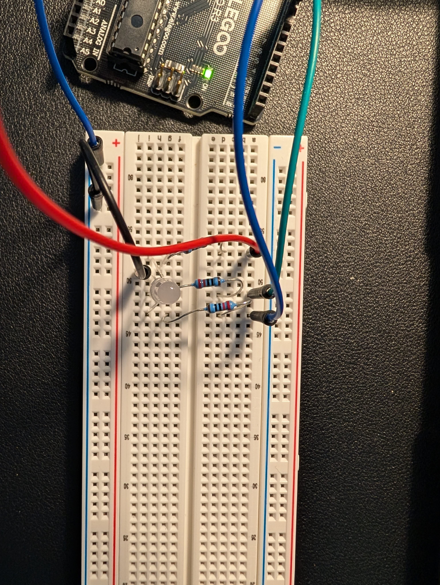
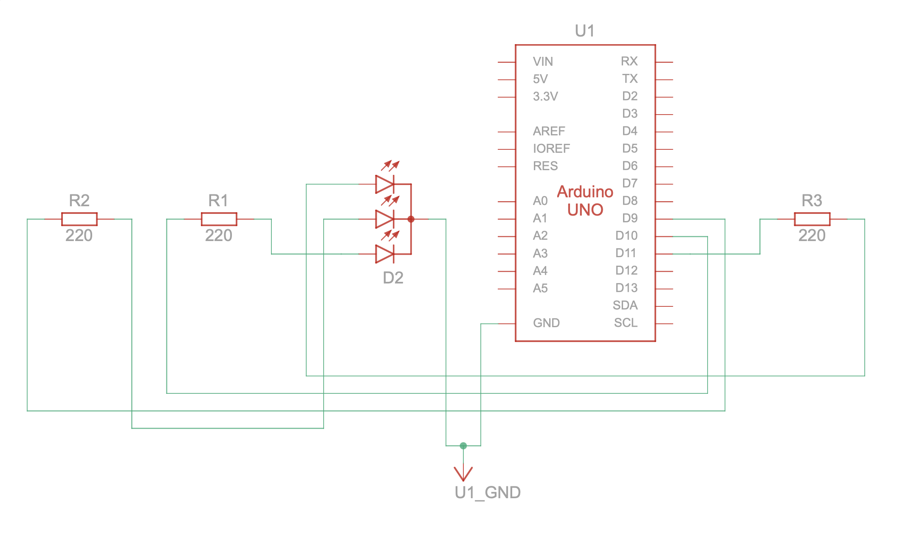
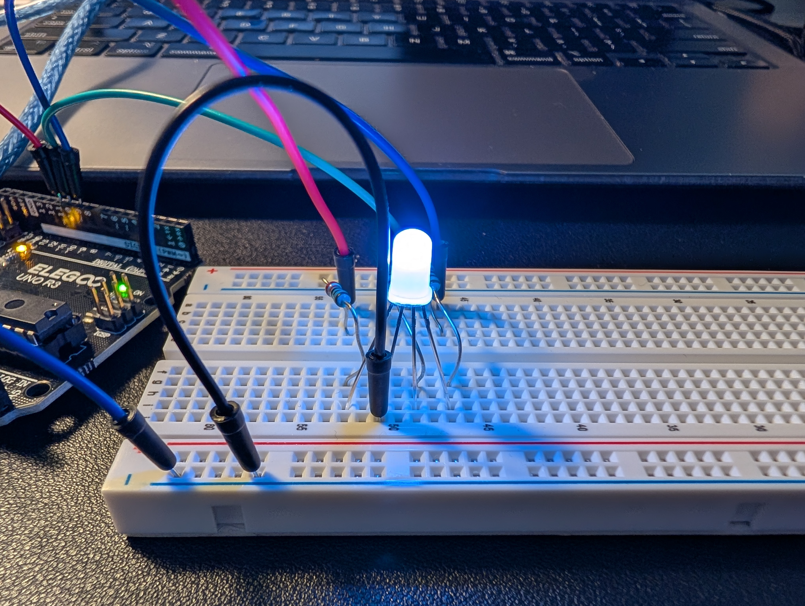
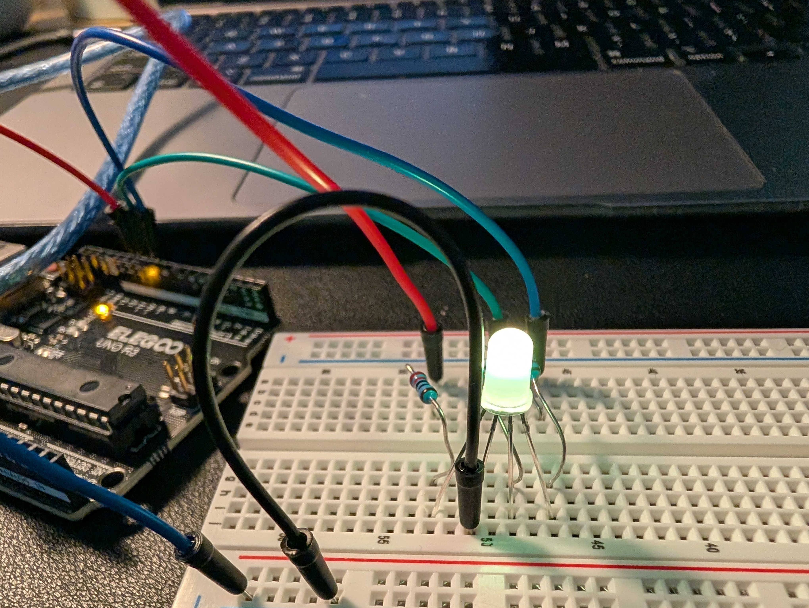
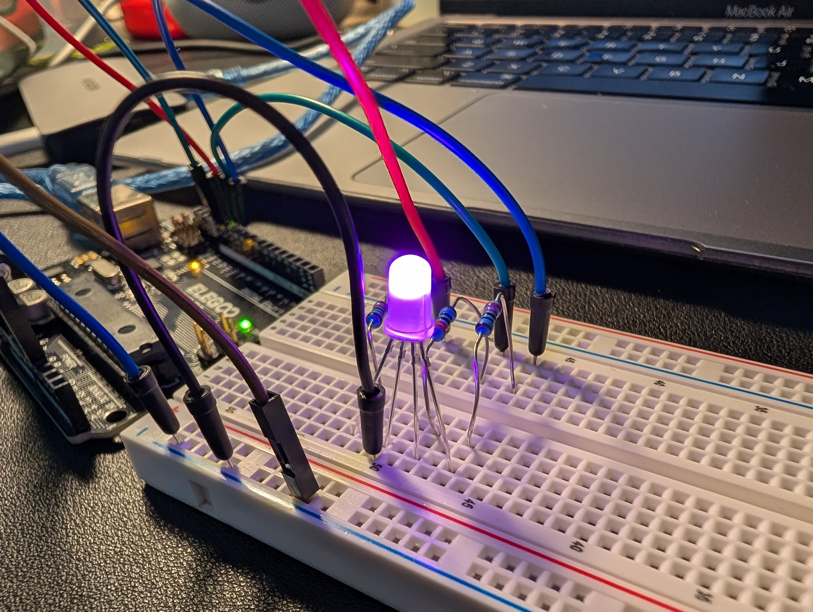
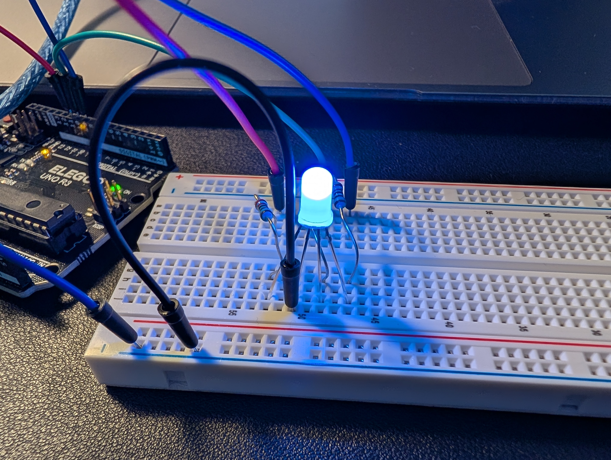
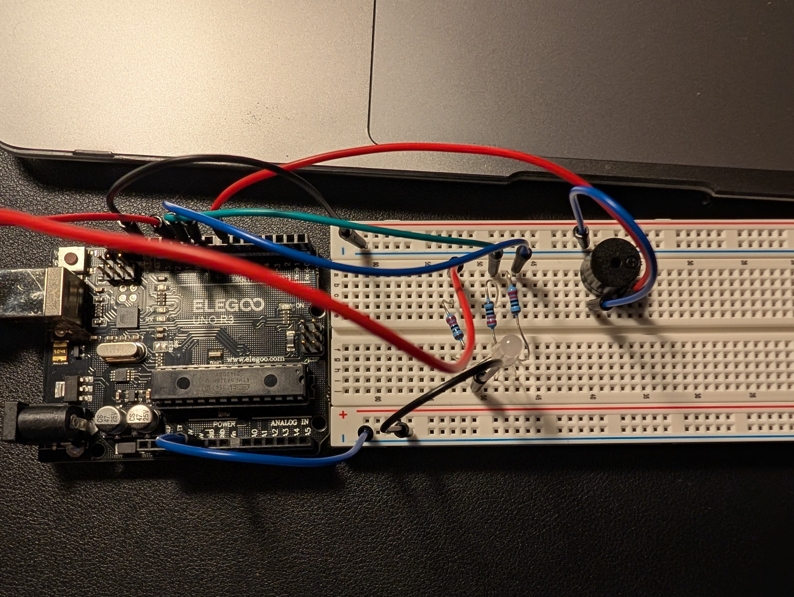
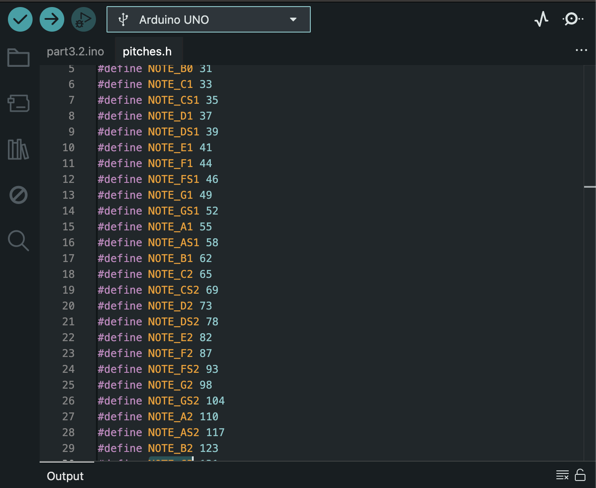

Lab 5: “Revenge of the Synth”
Materials Used
- Arduino (Elegoo) Uno R3 Controller Board
- USB Cable
- USB Adapter
- Joystick Module
- Breadboard Jumper Wire
- Resistors
- RGB LED
- Multimeter
- Passive Buzzer
PART 1: Wiring Up The RGB LED
Which resistor should be used?
I used 220 Ohm resistors because even though there are three possible pins to use, they can all, individually, send the same amount of power that one pin could send to an LED with one color. So, I used 220 Ohm resistors to prevent a short circuit.

Circuit Schematic
It's easier to see what's going on in this schematic.





PART 2: Dynamic Color Changer With Joystick
Coding
All I did here was assign x, y, blue, green, and red to pins in the Arduino. Then, I randomized the blue pin and mapped the x and y values to be between 0 and 255 so that I could use them to change red (x) and green (y).
PART 3: Musical Notes With Passive Buzzer
Passive Buzzer Circuit
Here is how I set up the passive buzzer circuit.

Buzzer Sound
This is the buzzer playing A at 440hz.
Pitches.h open next to my Arduino sketch.

Changed the pitch using pitches.h!
Part 4: Melody From The Buzzer
Star Wars: Darth Vader Music
I put the notes, note lengths, and whether the notes were dotted or not in separate arrays. Then I used a for loop in order to play each note and if the note is dotted, add some more space at the end of the note.
Midwest Indigo by Twenty One Pilots
I used the same code from the Darth Vader theme in order to make the buzzer play one specific synth sequence from Midwest Indigo by Twenty One Pilots. In order to do this, I found the sheet music online for the synth and put the notes and note lengths in separate arrays. Then, since the rhythm was simple, I used the dotted array to define which notes had an eigth rest after them.
Fun Fact!
I made the the buzzer match the tempo of Midwest Indigo as well by listening to the song and matching up the timing of the notes!